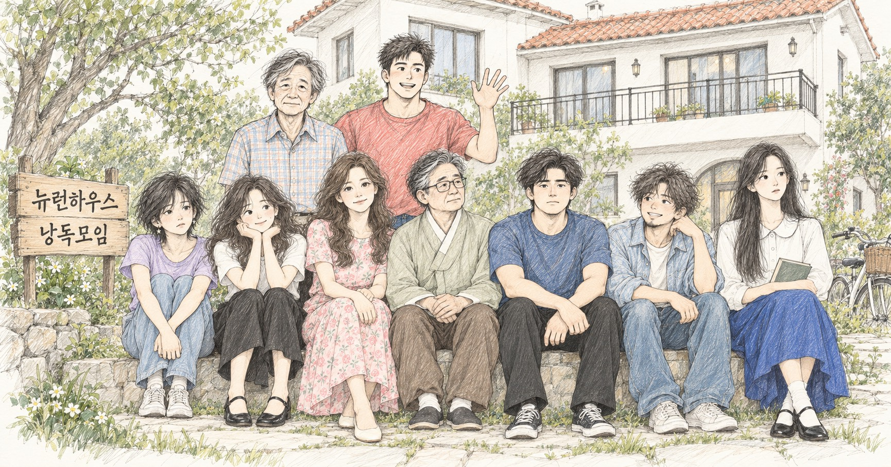

NEURON HOUSE · READING COMPANION
함께 살며,
열 사람의 이야기.
처음에는 이름보다 별칭이 더 잘 기억납니다.
나그네, 평화, 바위, 수선화, 봄비,
오아시스, 햇살, 바람, 새벽.
그리고 엄마 곁으로 온 윤서.
서로 다른 일상에서 이 집으로 걸어온 사람들.
뉴런하우스의 입주민이자 ‘너에게 말하기’를 배워가는
집단원들의 변화와 한나·백정현·윤서를 만나보세요.
7장 「빈 의자」까지의 내용 포함 · 8장 이후 제외
THE FIRST MEETING
집을 구하러 왔다가,
사람을 만나게 되는 곳.
하얀 벽과 빨간 기와, 잔디 마당이 있는 오래된 이층집. 뉴런하우스는 여덟 입주자와 한 명의 심리치료자가 함께 살기 시작한 셰어하우스입니다. 6장부터는 봄비의 딸 윤서도 함께 지냅니다.
깔끔한 시설과 부담이 적은 임대료는 이 집의 공통적인 매력입니다. 대신 입주자들은 일주일에 두 번, ‘창문 닦기 대화모임’에 참여합니다. 첫 모임에서는 각자 별칭을 정하고 자신을 소개하지요.
‘창문 닦기 대화모임’은 어떤 대화인가요?
창문은 우리의 마음을 뜻합니다. 창에 때가 끼면 바깥이 흐리게 보이듯, 익숙한 생각이나 방어가 나와 다른 사람을 있는 그대로 보는 일을 어렵게 만들 수 있습니다. ‘창문 닦기’는 그 마음을 함께 살펴보자는 비유입니다.
게슈탈트 체험집단에서는 이야기를 분석하거나 정답을 찾는 데만 머무르지 않고, 지금 이 자리에서 느끼는 감정과 몸의 반응, 상대와 마주하며 생기는 경험에 주의를 기울입니다. “너는 원래 이런 사람이야”라는 판단보다 “나는 지금 이런 마음이 들어”라는 말로 서로를 만납니다.
- 지금의 마음 알아차리기 — 무엇을 느끼고 원하는지 천천히 살펴봅니다.
- 나의 경험으로 말하기 — 상대를 평가하는 대신, 그 앞에서 생기는 내 마음을 이야기합니다.
- 서로의 말을 듣기 — 비난이나 공격을 멈추고 이해와 수용의 자리를 만듭니다.
소설 속 모임에는 비밀 유지와 공격 금지의 약속이 있습니다. 진행자는 이 약속을 지키며 대화할 수 있도록 돕습니다. 자신의 감정을 알아차리고 표현하는 일, 서로를 존중하며 듣는 일이 ‘너에게 말하기’를 배워가는 출발점입니다.
《뉴런하우스》 33쪽, 38–39쪽 · 부록 「마음 들여다보기」 363–364쪽, 368–369쪽을 바탕으로 정리했습니다. 인물의 후반 이야기는 포함하지 않았습니다.
아홉 집단원의 첫 만남과 7장까지의 변화를 함께 담았습니다. 윤서는 열 번째 식구로, 한나·백정현도 인물 버튼을 눌러 소개를 읽을 수 있습니다. 8장 이후에 밝혀지는 사정과 결말은 제외했습니다.
MEET THE PEOPLE
어떤 인물에게 마음이 가나요?
인물 버튼을 누르면 자세한 소개가 열립니다.
마음이 가는 한 사람에게 하트를 남겨주세요.
함께 고른 마음을 불러오는 중입니다.
한 브라우저에서 한 사람을 선택할 수 있으며, 다시 누르면 취소하거나 다른 사람으로 바꿀 수 있어요. 이름은 받지 않고 전체 선택 수만 공개합니다.
한 사람씩, 조금 더 가까이
01 / 10
아래 인물 버튼을 누르면 그 사람의 자세한 소개를 읽을 수 있어요.
A NOTE FOR YOUR READING
첫인상은 시작일 뿐이니까.
책을 읽으며 이 사람들의 말과 침묵이 어떻게 들리는지 살펴보세요.
여기까지는 7장 「빈 의자」를 읽은 시점의 모습입니다. 이후 이야기는 책에서 만나주세요.
소개 범위와 그림에 대하여
김정규의 소설 《뉴런하우스》 인물표와 1–7장, 장별 인물탐구 자료를 대조해 정리했습니다. 각 항목에 근거 쪽수를 적었습니다. 8장 이후의 사건·정체·관계 변화는 포함하지 않았습니다.
일러스트는 본문의 외형 묘사를 바탕으로 제작한 창작 시안입니다. 본문에 없는 얼굴 세부와 일부 의상·소품은 디자인을 위해 새롭게 정했습니다.
